试用国产超导量子计算云平台ScQ
Ping Zhou, 2021-05-21
最近中科院物理所发布了一个量子计算云平台ScQ，是一个10量子位的超导量子计算机，可以在云端免费用。看到这个新闻很兴奋，忍不住马上去试用了一下。
点击云平台的链接（http://q.iphy.ac.cn/），进去以后是这样的：
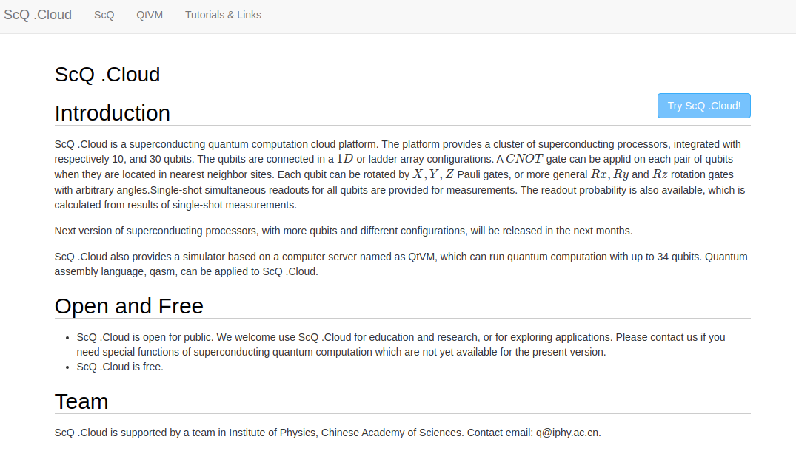
点击“Try ScQ Cloud”，进入量子电路页面：
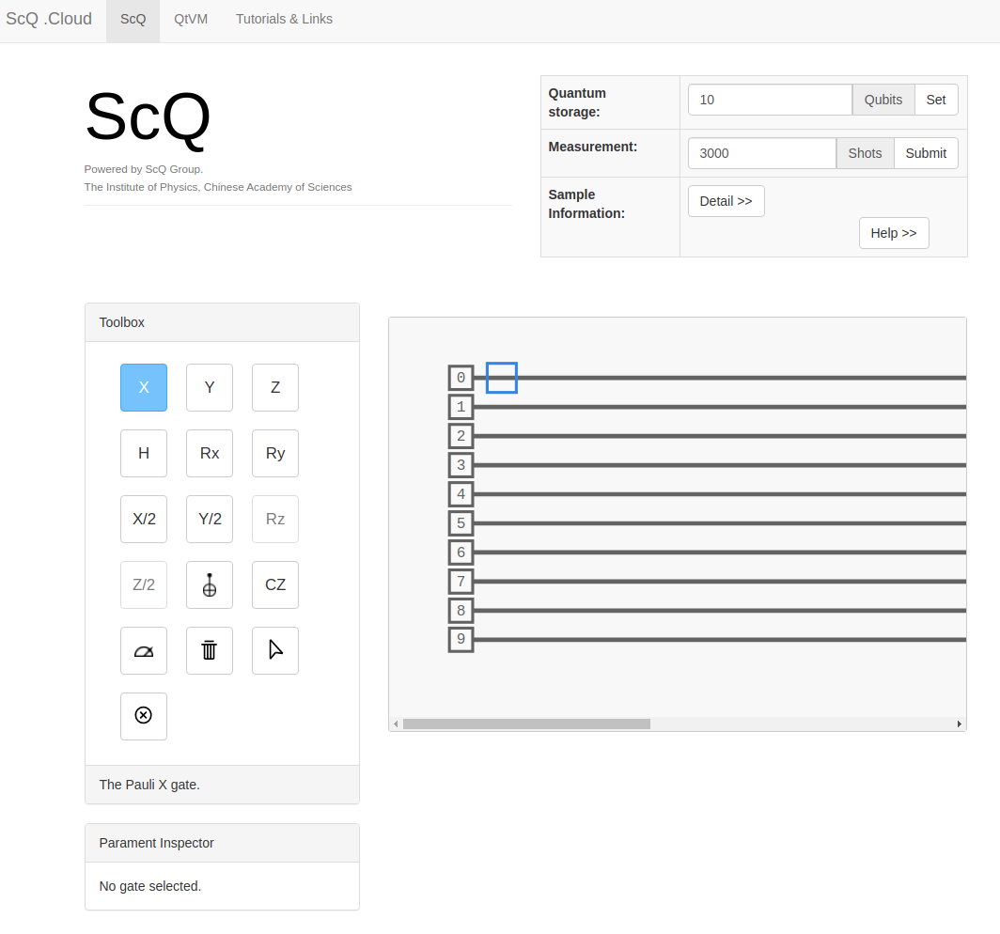
先来试试精度，用2个量子比特，测量它们的初始状态（应该都是0）：
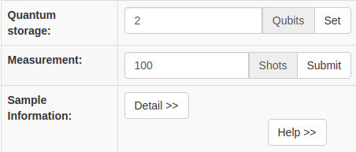
点击Submit，让我耐心等待结果：
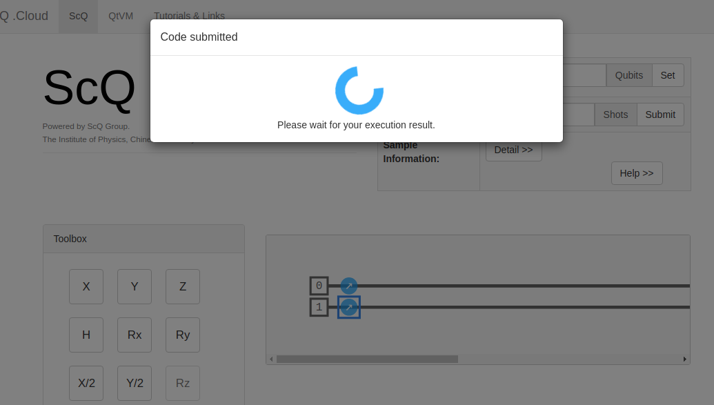
然后结果是这样：
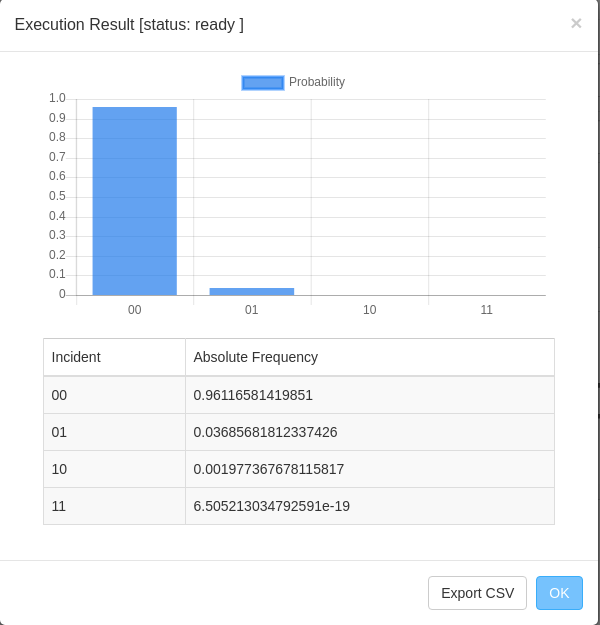
测量100次，96%情况下符合预期（00 ），有3%的情况下第2个量子位测到1…
试试H门产生叠加态：
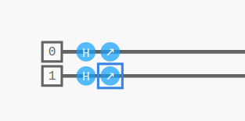
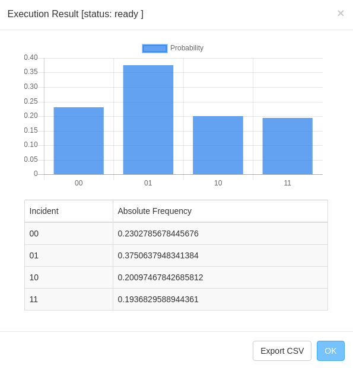
预期是4个状态各25%，这个误差有点高……感觉可能我的取样次数（100）太少，增加到1000次，结果就好了很多：
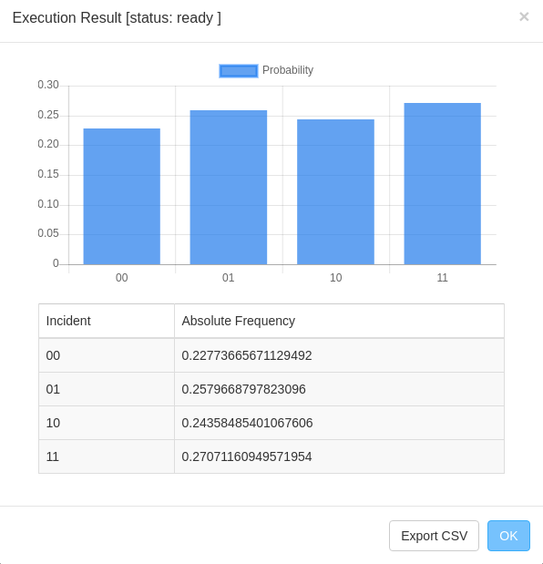
再来试试Deutsch算法：f(x)=x, 预期输出1 (balanced)
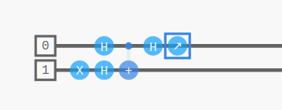
取样1000次，92%的情况下得到正确的结果。
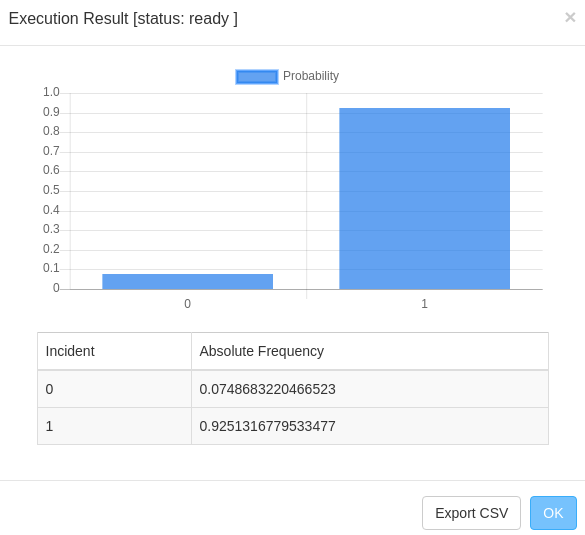
取样10000次，正确率达到接近97%：
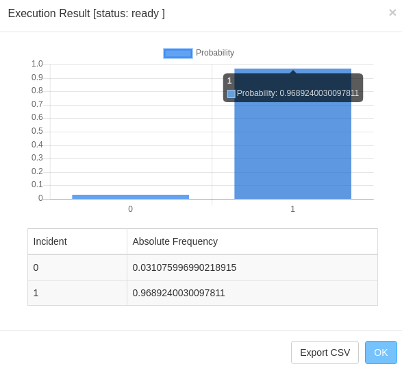
第一次试用国产量子计算云平台的感受：
- 用户体验不错，界面直观易用，一键就可开始搭建电路
- 目前只支持10个量子位和基本的量子逻辑门，功能还比较有限
- 从我运行的结果看，误差还是有点高
- 提交电路后，有时候会返回运行错误，需要重试
为国产量子计算平台的进展感到高兴，希望将来能看到更多的消息！